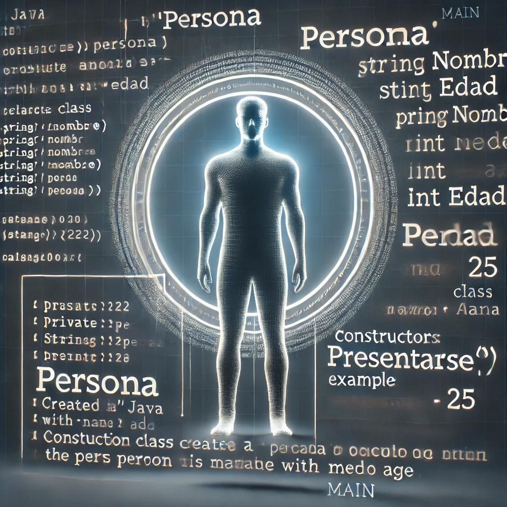

Paradigmas
Introducción a los Paradigmas de Programación
Los paradigmas de programación son enfoques o estilos para resolver problemas mediante código. Cada paradigma tiene sus principios, ventajas y desventajas, y está diseñado para abordar problemas de diferentes maneras. En este documento, exploraremos cuatro paradigmas principales: imperativo, declarativo, orientado a objetos y funcional.
1. Paradigma Imperativo
El paradigma imperativo es uno de los enfoques más tradicionales. En él, el programador indica paso a paso cómo se debe realizar cada tarea.
Características
- Enfoque en cambiar el estado mediante secuencias de instrucciones.
- Uso intensivo de bucles y estructuras de control de flujo (if, else, for, while).
Ejemplo en Java
En Java, este paradigma se utiliza ampliamente debido a su sintaxis estructurada.
public class SumaImperativa {
public static void main(String[] args) {
int sum = 0;
for (int i = 1; i <= 5; i++) {
sum += i;
}
System.out.println("La suma es: " + sum);
}
}2. Paradigma Declarativo
En el paradigma declarativo, el programador especifica qué se quiere lograr, no cómo hacerlo. Esto permite centrarse en el resultado y no en los pasos intermedios.
Características
Describe el resultado deseado en lugar de los pasos detallados.
Más conciso y fácil de leer para tareas específicas como consultas de bases de datos.
Ejemplo con Java y SQL
En Java, el uso de SQL en aplicaciones es un ejemplo de un enfoque declarativo.
SELECT nombre, edad FROM estudiantes WHERE edad > 18;3. Paradigma Orientado a Objetos
La programación orientada a objetos (POO) es ampliamente utilizada en Java. Este paradigma organiza el código en “objetos”, que representan entidades del mundo real.
Características
Usa conceptos de clases y objetos.
Principios de abstracción, encapsulación, herencia y polimorfismo.
Ejemplo en Java
Aquí un ejemplo básico de POO en Java:
class Persona {
private String nombre;
private int edad;
public Persona(String nombre, int edad) {
this.nombre = nombre;
this.edad = edad;
}
public void presentarse() {
System.out.println("Hola, soy " + nombre + " y tengo " + edad + " años.");
}
}
public class Main {
public static void main(String[] args) {
Persona persona = new Persona("Ana", 25);
persona.presentarse();
}
}

4. Paradigma Funcional.
El paradigma funcional trata las funciones como ciudadanos de primera clase. En este estilo, se evita el cambio de estado y las variables mutables.
Características
Uso de funciones puras (sin efectos secundarios).
Uso de funciones de orden superior y técnicas como el mapeo y el filtrado.
Ejemplo en Java.
magina que tienes una lista de números y quieres obtener solo los números pares y calcular el doble de cada uno de ellos. En el paradigma funcional, no describimos cada paso de cómo lograr esto con bucles o variables que cambien, sino que aplicamos funciones que transforman la lista de manera declarativa.
Primero, aplicamos una función de filtro para seleccionar solo los números pares.
Luego, aplicamos una función de mapeo para multiplicar cada número par por dos.
Finalmente, obtenemos el resultado como una nueva lista.